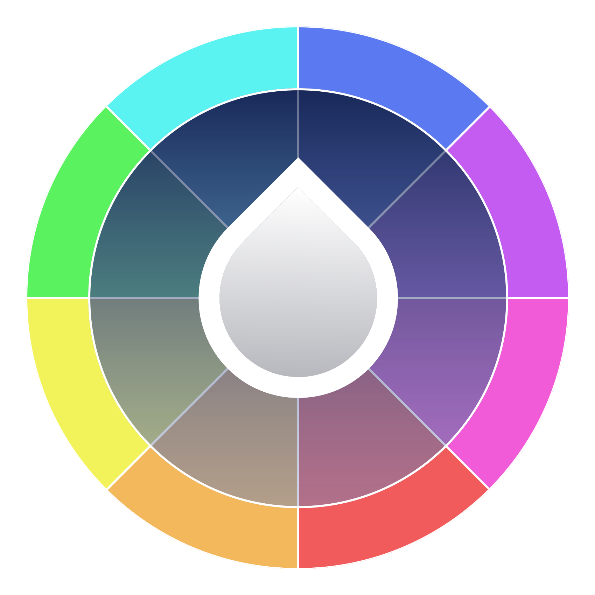

Team Calendula & Systemiser
Building software for under-represented mental health conditions
Clue-Hyde Pollen · Tennessee State University
We are in a crisis,
though you might not know it.

The money has a direction.
The data shows where investment goes. What it leaves out deserves a closer look.
Some conditions…
attract significant research funding and technology investment.
Others…
draw disproportionately little support relative to their real-world burden.
The use of AI shows the demand.
1,000,000+ users a week in conversations with explicit indicators of potential suicide planning.
Therapy chatbots showed stigma toward severe conditions and failed to interrupt suicidal intent.
The capability is new. The investment went the other way.
*One standing exception: PTSD, funded by government, not the market. That is the next slide.
PTSD: what sustained public investment built.
The catch: that care is concentrated at the VA; it exists for veterans. The other trauma-based conditions, and most people living with them, are still on the outside.
There is proof of the model: where a condition gets sustained investment, purpose-built software follows. Who gets to benefit is the open question.
Sources: U.S. Dept. of Veterans Affairs, National Center for PTSD (app suite) · Rizzo et al., USC Institute for Creative Technologies — BRAVEMIND VR exposure therapy, in use across 170+ clinical sites; largest RCT to date found VR exposure equivalent to prolonged exposure (Difede, Rothbaum & Rizzo et al., 2022)
for trauma-based disorders.
The same model, pointed at the rest of the class.
Every product begins the same way: rigorous research into the condition it serves, before a single feature is designed.
Trauma-related conditions, category by category
Trauma-cluster categories, with ICD-10 codes as catalogued by our research mapping. Other clusters exist where trauma can be a major causal factor: depressive, anxiety, personality, and substance-use disorders.

Built for dissociative disorders,
designed around one unifying need: continuity.
Symptoms disrupt memory, identity, and the organization of daily life, the thread of a person's own story can break without warning.
Systemiser's purpose: restore continuity when symptoms disrupt it.
Continuity breaks down into concrete capabilities.
Identity states & transitions
Represent the distinct identity states that characterize these conditions, and track which is present, and how it changes over time.
A structured record
Events, status, functioning, and notes, auto-linked to the identity state present when they were created. A record you can return to when memory can't be trusted to hold it.
Selective by design
A granular privacy model with viewer-tiered visibility. Sensitive information demands granular control.
Capabilities as designed, in development; tested status follows.
Four core feature cycles, exercised in prototype testing to date.
Built as an application ecosystem: desktop, mobile, web, and social-media integration.
The point is continuity that follows the person across every surface they already use.
Planned gateways: platforms that already shape daily life, turned toward assistive purposes.
What's next: extending continuity into daily life.
Grounding techniques & crisis-support tools under active development
Disorder-specific needs the first four cycles don't yet address. Grounding is a standard clinical strategy for dissociative episodes.
Daily-organization continuity planned
Reminders · to-do lists · offline access · mood check-ins · a calendar linking mood, transitions, and notes · accessibility work: screen-reader support, keyboard navigation, motion-sensitivity options.
App connectivity planned
Connects with future Team Calendula apps and partnered apps and resources.
A growing family of condition-specific products.
ISER
Rigorous research per product, gateway categories reusable across every product.
Connectivity across the family: apps talk to apps, and to partnered resources.
Closing the gap condition by condition; early conversations with clinicians and organizations already underway.
Technology rebuilt sector after sector, and left this one behind.
The need is documented. The capability exists. The attention is the missing piece.
Team Calendula targets that gap condition by condition, starting with Systemiser, whose four tested cycles are the beginning, not the promise.
One condition at a time,
that is how the gap closes.
Thank you · Questions welcome
Sources & image credits
WHO (Sept 2025). Over a billion people living with mental health conditions — services require urgent scale-up.
IAMHRF (2026). Global mental-health research funding analysis, 2014–2023 (~110,000 grants); the decline to 2014 real-terms levels is reported in Nature, "Mental-health research is too often invisible." IAMHRF (2020). Funding Landscape Report (75,000+ grants): <2% of funding targets conditions causing >50% of mental-illness deaths; 95% in high-income countries.
WHO Mental Health Atlas (2020, 2024). Government mental-health service spending.
Rock Health (2020–2026). US digital-health venture funding reports: 2024 total $10.1B; mental health $1.4B, top-funded clinical area six years running.
Crunchbase (2024–2025). Global venture funding by sector (Q3 2024 snapshot); AI funding by year, 2022–2025.
CB Insights (2025). State of Venture 2024: AI at a record 37% of global venture funding.
npj Digital Medicine (2025). Global meta-analysis of the digital divide in psychiatric populations, 2004–2023 (48 samples, 10,324 people): smartphone ownership 77%, internet use 87%, near-parity with the general population. npj Digital Medicine (2026). Mapping AI startup investment and innovation in healthcare. doi:10.1038/s41746-026-02595-5.
Torous, J. (Nov 2025). Testimony, US House Energy & Commerce Subcommittee; OpenAI-reported usage data — Harvard Medicine Magazine, "Millions already turn to AI for therapy."
Moore, J., et al. (2025). Expressing stigma and inappropriate responses prevents LLMs from safely replacing mental health providers. ACM FAccT 2025. arXiv:2504.18412.
Rousmaniere et al. (2025); Stade et al. (2025); cross-sectional surveys of AI-chatbot use for mental-health support — PMC13570025, PMC13579130.
American Psychiatric Association (2022). DSM-5-TR: trauma- and stressor-related disorders; dissociative disorders.
Cleveland Clinic; Mayo Clinic — dissociative disorders, clinical overviews.
US Dept. of Veterans Affairs, National Center for PTSD — mobile application suite (ptsd.va.gov).
USC Institute for Creative Technologies — Bravemind VR exposure therapy (medvr.ict.usc.edu).
Image credits: photography via Unsplash/Pexels free licenses — photographer credited per image.
Icons: Lucide (ISC license, lucide.dev) · Star-field effect: shootingstar-html v1.0.0 (MIT, github.com/bvv8808/shootingstar-html) · Petal effect: Sakura.js v1.1.1 (MIT, github.com/jhammann/sakura).
Deck source: github.com/jardinsys/Team-Calendula — docs/acm-presentation.